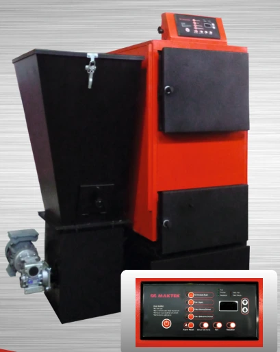

Profesyonel Teknik Hizmetlerimiz
Yetkili servis güvencesiyle sunduğumuz tüm çözümler aşağıda listelenmiştir.
Yetkili Kombi Servisi & Tamir
Sanica, Maktek, Ariston, Dizayn ve Hexel markalarının yetkili servisi olarak, kombilerinizde oluşan tüm arızalara %100 orijinal yedek parça kullanarak müdahale ediyoruz. Yapılan tüm tamir işlemleri servis garantimiz altındadır.
- Orijinal Yedek Parça Kullanımı
- Kart Tamiri ve Değişimi
- 7/24 Acil Arıza Desteği
Makineli Petek Temizliği
Isınmayan peteklere son! Özel yıkama makinelerimiz ve TSE onaylı koruyucu ilaçlarımız ile tesisatınızdaki çamur, tortu ve kireci tamamen temizliyoruz. Bu işlem yakıt tasarrufunuzu %30'a kadar artırır.
- Çift Yönlü Makinalı Temizlik
- Koruyucu Kimyasal Uygulama
- Filtre Temizliği & Reglaj Ayarı
Doğalgaz Tesisatı & Proje
Daire içi doğalgaz tesisatı, kolon hattı ve tadilat işlerinizde uzman kadromuzla yanınızdayız. Projelendirme aşamasından gaz açma sürecine kadar tüm adımları yönetiyoruz.
- Yetkili Tesisat Kurulumu
- Proje Onay Takibi
- Sızdırmazlık Testleri

Katı Yakıtlı Kazan Bakım & Onarım
Kömür, pelet ve odun yakan merkezi veya bireysel kazan sistemlerinizin verimli çalışması için profesyonel çözümler sunuyoruz. Katı yakıtlı sistemlerde biriken kurum ve küller, hem yakıt sarfiyatını artırır hem de hayati risk oluşturur.
- Kazan içi kurum ve duman borusu temizliği
- Helezon ve yükleme motoru kontrolü
- Fan ve hava klapesi ayarları
- Emniyet ventili ve genleşme tankı kontrolü
- Dijital kumanda paneli arıza onarımı
Sıkça Sorulan Sorular
Servis randevusu ne kadar sürede oluşturulur?
Acil arızalarda Menemen ve çevresine aynı gün, diğer bölgelere ise en geç 24 saat içinde müdahale ediyoruz.
Değiştirilen parçalar garantili mi?
Evet, yetkili servis olarak kullandığımız tüm parçalar %100 orijinaldir ve 1 yıl parça garantisi altındadır.
Petek temizliği ne kadar sürer?
Standart bir dairede petek temizliği işlemi yaklaşık 1.5 - 2 saat sürmekte ve eviniz kirletilmeden tamamlanmaktadır.